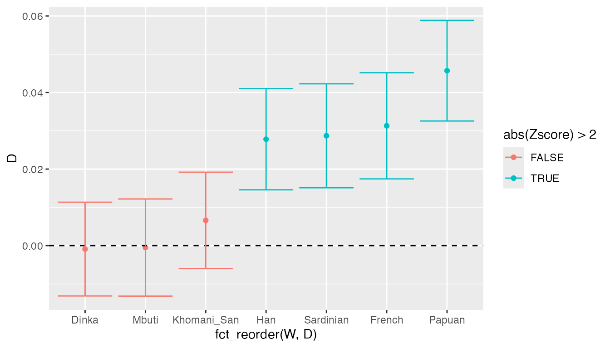
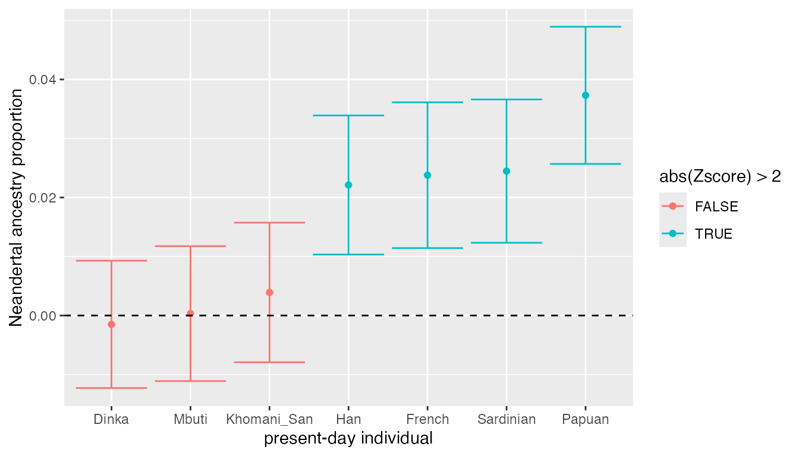
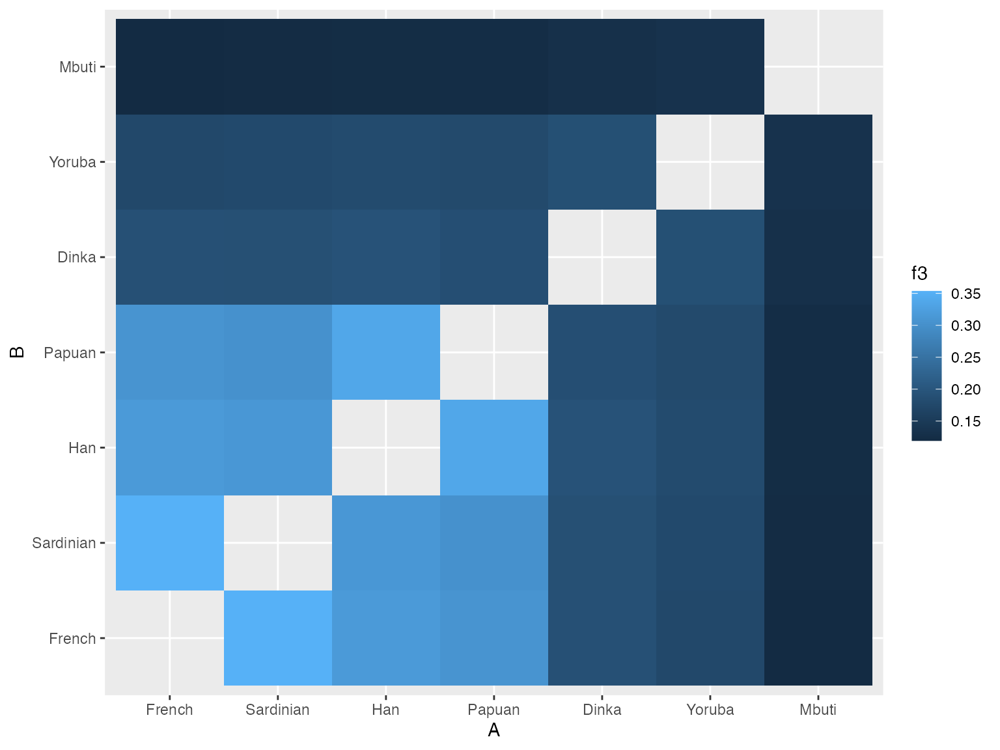

Basic overview of the admixr package
Martin Petr
2025-11-24
Source:vignettes/vignette-01-tutorial.Rmd
vignette-01-tutorial.RmdIntroduction
ADMIXTOOLS is a widely used software package for calculating admixture statistics and testing population admixture hypotheses.
A typical ADMIXTOOLS workflow generally involves a combination of
sed/awk/shell scripting and manual editing to
create text configuration files. These are then passed as command-line
arguments to one of ADMIXTOOLS commands, and control how to run a
particular analysis. The results are then redirected to another file,
which has to be parsed by the user to extract values of interest, often
using command-line utilities again or (worse) by manual copy-pasting.
Finally, the processed results are analysed in R, Excel or another
program.
This workflow can be a little cumbersome, especially if one wants to explore many hypotheses involving different combinations of populations. Most importantly, however, it makes it difficult to coduct reproducible research, as it is nearly impossible to construct fully automated “pipelines” that don’t require user intervention.
This R package makes it possible to perform all stages of ADMIXTOOLS analyses entirely from R, completely removing the need for “low level” configuration of individual ADMIXTOOLS programs.
Installation
Note that in order to use the admixr package, you need a working installation of ADMIXTOOLS! You can find installation instructions here. The software runs on Linux and macOS and these are the two systems that admixr is tested on.
Furthermore, you also need to make sure that R can find
ADMIXTOOLS binaries on the $PATH. You can achieve
this by specifying
PATH=<path to the location of ADMIXTOOLS programs> in
the .Renviron file.
To install admixr you can simply run the following command in your R session:
install.packages("admixr")Furthermore, if you want to follow the examples in this vignette, you will need the a few tidyverse packages for data manipulation and plotting, which you can install with:
install.packages(c("dplyr", "ggplot2", "forcats"))You definitely don’t need tidyverse for working with admixr but it really makes data manipulation and plotting things much easier. I recommend at least giving it a shot.
When everything is ready, you can run the following code to load both packages:
A note about EIGENSTRAT format
ADMIXTOOLS software uses a peculiar set of genetic file formats, which may seem strange if you are used to working with VCF files. However, the basic idea remains the same: we want to store and access SNP data (REF/ALT alleles) of a set of individuals at a defined set of genomic positions.
EIGENSTRAT datasets always contain three kinds of files:
-
indfile - specifies a unique name, sex (optional - can be simply “U” for “undefined”) and label (such as population assignment) of each sample; -
snpfile - specifies the positions of SNPs, REF/ALT alleles etc.; -
genofile - contains SNP data (one row per site, one character per sample) in a dense string-based format:- 0: individual is homozygous ALT
- 1: individual is a heterozygote
- 2: individual is homozygous REF
- 9: missing data
Therefore, a VCF file is essentially a combination of all three files in a single package.
Let’s first download a small testing SNP dataset using a built-in
admixr function download_data(). This function
downloads the data into a temporary directory (you can specify the
destination using its dirname argument, in case you want to
place it elsewhere). In addition to this, the function returns a shared
path/prefix of the whole dataset.
(prefix <- download_data(dirname = tempdir()))
[1] "/var/folders/lq/bl36db_s6w908hnjkntdp4140000gn/T//Rtmp57SUNm/snps/snps"We can verify that there are indeed three files with this prefix:
list.files(path = dirname(prefix), pattern = basename(prefix), full.names = TRUE)
[1] "/var/folders/lq/bl36db_s6w908hnjkntdp4140000gn/T//Rtmp57SUNm/snps/snps.geno"
[2] "/var/folders/lq/bl36db_s6w908hnjkntdp4140000gn/T//Rtmp57SUNm/snps/snps.ind"
[3] "/var/folders/lq/bl36db_s6w908hnjkntdp4140000gn/T//Rtmp57SUNm/snps/snps.snp" Let’s look at their contents:
ind file
Chimp U Chimp
Mbuti U Mbuti
Yoruba U Yoruba
Khomani_San U Khomani_San
Han U Han
Dinka U Dinka
Sardinian U Sardinian
Papuan U Papuan
French U French
Vindija U Vindija
Altai U Altai
Denisova U DenisovaThe first column (sample name) and the third column (population
label) are generally not the same (sample names often have numerical
suffixes to make them unique, etc.), but were kept the same here for
simplicity. Importantly, when specifying population/sample names in
admixr functions, the information in the third column is what
is used. For example, if you have individuals such as “French1”,
“French2”, “French3” in the first column of an ind file,
all three sharing a “French” population label in the third column,
specifying “French” in an admixr function will combine all
three samples in a single population, instead of working with each
individual separately.
Philosophy of admixr
The goal of admixr is to make ADMIXTOOLS analyses as trivial to run as possible, without having to worry about par/pop/left/right configuration files (as they are known in the jargon of ADMIXTOOLS) and other low-level details.
The only interface between you and ADMIXTOOLS is the following set of R functions:
Anything that would normally require dozens of lines of shell scripts can be often accomplished by running a single line of R code.
Internal representation of EIGENSTRAT data
As we saw above, each EIGENSTRAT dataset has three components. The
way this data is internally represented in admixr is using a
small S3 R object created using the eigenstrat constructor
function. This function accepts the path and prefix of a trio of
EIGENSTRAT snp/ind/geno files and returns an R object of the class
EIGENSTRAT:
snps <- eigenstrat(prefix)
snps
#> EIGENSTRAT object
#> =================
#> components:
#> ind file: /var/folders/lq/bl36db_s6w908hnjkntdp4140000gn/T//Rtmp57SUNm/snps/snps.ind
#> snp file: /var/folders/lq/bl36db_s6w908hnjkntdp4140000gn/T//Rtmp57SUNm/snps/snps.snp
#> geno file: /var/folders/lq/bl36db_s6w908hnjkntdp4140000gn/T//Rtmp57SUNm/snps/snps.genoThis object encapsulates the paths to all three EIGENSTRAT components and makes it easy to pass the data to different admixr functions.
The following couple of sections describe how to use the admixr package using simple example analyses.
D statistic
Let’s say we are interested in the following question: “Which populations today show evidence of Neanderthal admixture?
One way of looking at this is using the following D statistic:
statistics are based on comparing the proportions of BABA and ABBA sites patterns observed in the data:
Significant departure of from zero indicates an excess of allele sharing between the first and the third population (positive ), or an excess of allele sharing between the second and the third population (negative ). If we get that is not significantly different from 0, this suggests that the first and second populations form a clade, and don’t differ in the rate of allele sharing with the third population (this is the null hypothesis that the data is compared against).
Therefore, our statistic above tests whether some modern humans today admixed with Neanderthals, which would increase their genetic affinity to this archaic group compared to Africans (whose ancestors never met Neanderthals).
Let’s save some population names first to make our code more concise:
pops <- c("French", "Sardinian", "Han", "Papuan", "Khomani_San", "Mbuti", "Dinka")Using the admixr package we can then calculate our statistic simply by running:
result <- d(W = pops, X = "Yoruba", Y = "Vindija", Z = "Chimp", data = snps)The result is a following data frame:
head(result)| W | X | Y | Z | D | stderr | Zscore | BABA | ABBA | nsnps |
|---|---|---|---|---|---|---|---|---|---|
| French | Yoruba | Vindija | Chimp | 0.0313 | 0.006933 | 4.510 | 15802 | 14844 | 487753 |
| Sardinian | Yoruba | Vindija | Chimp | 0.0287 | 0.006792 | 4.222 | 15729 | 14852 | 487646 |
| Han | Yoruba | Vindija | Chimp | 0.0278 | 0.006609 | 4.199 | 15780 | 14928 | 487925 |
| Papuan | Yoruba | Vindija | Chimp | 0.0457 | 0.006571 | 6.953 | 16131 | 14721 | 487694 |
| Khomani_San | Yoruba | Vindija | Chimp | 0.0066 | 0.006292 | 1.051 | 16168 | 15955 | 487564 |
| Mbuti | Yoruba | Vindija | Chimp | -0.0005 | 0.006345 | -0.074 | 15751 | 15766 | 487642 |
We can see that in addition to the specified population names, the output table contains additional columns:
-
D- statistic value -
stderr- standard error of the statistic calculated using the block jackknife -
Zscore- -zscore value (number of standard errors the is from 0, i.e. how strongly do we reject the null hypothesis of no admixture) -
BABA,ABBA- counts of observed site patterns -
nsnps- number of SNPs used for a given calculation
While we could certainly make inferences by looking at the
-scores,
tables in general are not the best representation of this kind of data,
especially as the number of samples increases. Instead, we can use the
ggplot2 package
to plot the results:
ggplot(result, aes(fct_reorder(W, D), D, color = abs(Zscore) > 2)) +
geom_point() +
geom_hline(yintercept = 0, linetype = 2) +
geom_errorbar(aes(ymin = D - 2 * stderr, ymax = D + 2 * stderr))
(If you want to more know about data analysis using R, including plotting with ggplot2, I highly recommend this free book.)
We can see that the values for Africans are not significantly different from 0, meaning that the data is consistent with the null hypothesis of no Neanderthal ancestry in Africans. On the other hand, the test rejects the null hypothesis for all non-Africans today, suggesting that Neanderthals admixed with the ancestors of present-day non-Africans.
f4 statistic
An alternative way of addressing the previous question is to use the statistic, which is very similar to statistic and can be calculated as:
Again, significant departure of from 0 can be interpreted as evidence of gene flow.
To repeat the previous analysis using
statistic, we can run the function f4():
result <- f4(W = pops, X = "Yoruba", Y = "Vindija", Z = "Chimp", data = snps)
head(result)| W | X | Y | Z | f4 | stderr | Zscore | BABA | ABBA | nsnps |
|---|---|---|---|---|---|---|---|---|---|
| French | Yoruba | Vindija | Chimp | 0.001965 | 0.000437 | 4.501 | 15802 | 14844 | 487753 |
| Sardinian | Yoruba | Vindija | Chimp | 0.001798 | 0.000427 | 4.209 | 15729 | 14852 | 487646 |
| Han | Yoruba | Vindija | Chimp | 0.001746 | 0.000418 | 4.178 | 15780 | 14928 | 487925 |
| Papuan | Yoruba | Vindija | Chimp | 0.002890 | 0.000417 | 6.924 | 16131 | 14721 | 487694 |
| Khomani_San | Yoruba | Vindija | Chimp | 0.000436 | 0.000415 | 1.051 | 16168 | 15955 | 487564 |
| Mbuti | Yoruba | Vindija | Chimp | -0.000030 | 0.000410 | -0.074 | 15751 | 15766 | 487642 |
By comparing this result to the statistic analysis above, we can make the same conclusions.
You might be wondering why we have both and if they are so similar. The truth is that is, among other things, directly informative about the amount of shared genetic drift (“branch length”) between pairs of populations, which is a very useful theoretical property. Other than that, it’s often a matter of personal preference and so admixr provides functions for calculating both.
f4-ratio statistic
Now we know that non-Africans today carry some Neanderthal ancestry. But what if we want to know how much Neanderthal ancestry they have? What proportion of their genomes is of Neanderthal origin? To answer questions like this, we can use the -ratio statistic, which can be formulated in the following way (using a notation of Patterson et al., 2012, who formally described its properties).
Using amidxr, we can calculate
-ratios
using the following code (X being a vector of samples which
we want to estimate the Neanderthal ancestry in):
result <- f4ratio(X = pops, A = "Altai", B = "Vindija", C = "Yoruba", O = "Chimp", data = snps)The ancestry proportion (a number between 0 and 1) is given in the
alpha column:
head(result)| A | B | X | C | O | alpha | stderr | Zscore |
|---|---|---|---|---|---|---|---|
| Altai | Vindija | French | Yoruba | Chimp | 0.023774 | 0.006176 | 3.850 |
| Altai | Vindija | Sardinian | Yoruba | Chimp | 0.024468 | 0.006071 | 4.031 |
| Altai | Vindija | Han | Yoruba | Chimp | 0.022117 | 0.005892 | 3.754 |
| Altai | Vindija | Papuan | Yoruba | Chimp | 0.037311 | 0.005812 | 6.420 |
| Altai | Vindija | Khomani_San | Yoruba | Chimp | 0.003909 | 0.005913 | 0.661 |
| Altai | Vindija | Mbuti | Yoruba | Chimp | 0.000319 | 0.005717 | 0.056 |
ggplot(result, aes(fct_reorder(X, alpha), alpha, color = abs(Zscore) > 2)) +
geom_point() +
geom_errorbar(aes(ymin = alpha - 2 * stderr, ymax = alpha + 2 * stderr)) +
geom_hline(yintercept = 0, linetype = 2) +
labs(y = "Neandertal ancestry proportion", x = "present-day individual")
We can make several observations:
- Again, we don’t see any significant Neanderthal ancestry in present-day Africans (proportion is consistent with 0%), which is what we confirmed using and above.
- Present-day non-Africans carry between 2-3% of Neanderthal ancestry.
- We see a much higher proportion of Neanderthal ancestry in people from Papua New Guinea - more than 4%. This is consistent with earlier studies that suggest additional archaic admixture events in the ancestors of present-day Papuans.
f3 statistic
The statistic, also known as the 3-population statistic, is useful whenever we want to:
- Estimate the branch length (shared genetic drift) between a pair of populations and with respect to a common outgroup . In this case, the higher the value, the longer the shared evolutionary time between and .
- Test whether population is a mixture of two populations and . Significantly negative values of the statistic are then a statistical evidence of this admixture.
As an example, imagine we are interested in relative divergence times between pairs of present-day human populations, and want to know in which approximate order they split of from each other. To address this problem, we could use statistic by fixing the outgroup as San, and calculating pairwise statistics between all present-day modern humans.
pops <- c("French", "Sardinian", "Han", "Papuan", "Mbuti", "Dinka", "Yoruba")
result <- f3(A = pops, B = pops, C = "Khomani_San", data = snps)
head(result)| A | B | C | f3 | stderr | Zscore | nsnps |
|---|---|---|---|---|---|---|
| French | French | Khomani_San | 0.000000 | -1.000000 | 0.000 | -1 |
| French | Sardinian | Khomani_San | 0.353447 | 0.012527 | 28.215 | 249760 |
| French | Han | Khomani_San | 0.316964 | 0.011914 | 26.604 | 253158 |
| French | Papuan | Khomani_San | 0.306962 | 0.011708 | 26.218 | 251648 |
| French | Mbuti | Khomani_San | 0.119283 | 0.008448 | 14.119 | 271501 |
| French | Dinka | Khomani_San | 0.190141 | 0.010049 | 18.922 | 276964 |
# sort the population labels according to an increasing f3 value relative to French
ordered <- filter(result, A == "Mbuti", B != "Mbuti") %>% arrange(f3) %>% .[["B"]] %>% c("Mbuti")
# plot heatmap of pairwise f3 values
result %>%
filter(A != B) %>%
mutate(A = factor(A, levels = ordered),
B = factor(B, levels = ordered)) %>%
ggplot(aes(A, B)) + geom_tile(aes(fill = f3))
We can see that when we order the heatmap labels based on values of pairwise statistics, the (already known) order of population splits pops up nicely (i.e. San separated first, followed by Mbuti, etc.).
qpWave and qpAdm
Both qpWave and qpAdm can be though of as more complex and powerful extensions of the basic ideas behind a simple statistic. Building upon the theory and generalizing it, qpWave makes it possible to find the lowest number of “streams of ancestry” between two groups of populations that is consistent with the data. Extending the concept of statistics even further, qpAdm allows to find the proportions of ancestry from a set of ancestral populations that contributed ancestry to our population of interest.
Unfortunately, both methods represent a rather advanced topic that still lacks proper documentation and beginner-friendly tutorials, and explaining them in detail is beyond the scope of this vignette. If you want to use them, it’s crucial that you read the official documentation decribing the basic ideas of both methods (distributed with ADMIXTOOLS), and that you read the relevant supplementary sections of papers published by David Reich’s group. At the very least, I recommend reading:
Note S6 of “Reconstructing Native American population history” by Reich et al. This paper first introduced the theoretical background of what later became qpWave.
Supplementary Information 10 of “Massive migration from the steppe was a source for Indo-European languages in Europe” by Haak et al., which gives a more consise overview of the qpWave method than S6 of Reich et al. 2012, and also introduces the qpAdm methodology for estimating admixture proportions.
A phenomenal description of qpAdm methodology and best practices by Harney et al. 2020 (see also PDF with practical guidelines they made available as a supplementary document. Both documents should really be a mandatory reading before doing any qpAdm analysis.
In the remainder of this section, I will assume that you are familiar with both methods, and will only explain how to use admixr for running them from R.
qpWave
To run qpWave, you must provide a list of left and right populations (using the terminology of Haak et al. 2015 above). The aim of the method is to get an idea about the number of migration waves from right to left (with no back-migration from left to right!). This is done by estimating the rank of a matrix of all possible statistics
where and are some fixed populations and the and indices run over all other possible choices of populations.
As an example, let’s try to find the number of admixture waves from
right = {Yoruba, Mbuti, Alta} into left = {French,
Sardinian, Han} populations. We can do this using the function
qpWave(), setting its arguments appropriately:
result <- qpWave(
left = c("French", "Sardinian", "Han"),
right = c("Altai", "Yoruba", "Mbuti"),
data = snps
)The qpWave() function returns a data frame which shows
the results of a series of matrix rank tests. The rank
column is the matrix rank tested, df, chisq
and tail give the degrees of freedom,
value and
-value
for the comparison with the saturated model (the
-value
then indicates which matrix rank is consistent with the data - see
example below), and dfdiff, chisqdiff and
taildiff give the same, but always comparing a model to the
model with one rank less.
result| rank | df | chisq | tail | dfdiff | chisqdiff | taildiff |
|---|---|---|---|---|---|---|
| 0 | 4 | 1.754 | 0.7808236 | 0 | 0.000 | 1.0000000 |
| 1 | 1 | 0.192 | 0.6615716 | 3 | 1.563 | 0.6678707 |
| 2 | 0 | 0.000 | 1.0000000 | 1 | 0.192 | 0.6615716 |
In this example, we see that matrix
cannot be rejected (tail
-value
= 0.78). Because Reich et al. 2012 showed that
,
where
is the number of admixture waves, we can interpret this as left
populations having at least
streams of ancestry from the set of right populations. In this
case, the most likely explanation is Neandertal admixture into
non-Africans today.
qpAdm
The qpAdm method can be used to find, for a given target population, the proportions of ancestry coming from a set of source populations. Importantly, since we often lack accurate representatives of the true ancestral populations, we can use a set of reference populations instead, under a crucial assumption that the references set is phylogenetically closer to true source populations than to a set of specified outgroups. For example, coming back to our example of estimating the proportions of Neandertal ancestry in people today, we could define:
- a set of European individuals as the target;
- Vindija Neanderthal and an African as two source populations;
- outgroup populations as Chimp, Altai Neanderthal and Denisovan (which are all further from the true ancestral populations than the specified sources).
Having defined all three population sets, we can run qpAdm with:
result <- qpAdm(
target = c("Sardinian", "Han", "French"),
sources = c("Vindija", "Yoruba"),
outgroups = c("Chimp", "Denisova", "Altai"),
data = snps,
params = list(inbreed = "YES") # forced by new ADMIXTOOLS qpfstats
)The qpAdm() function has an argument
details (default TRUE) which makes the function return a
list of three elements:
-
proportions- data frame with admixture proportions - this is what we mostly care about; -
ranks- results of rank tests performed by qpWave - these evaluate how well does the assumed traget-sources-outgroups population model match the data; -
subsets- results of the “all subsets” analysis (see the documentation for more details.
If details is set to FALSE, only the
proportions components is returned by the
qpAdm() function.
Let’s start with the ranks element:
result$ranks| target | rank | df | chisq | tail | dfdiff | chisqdiff | taildiff |
|---|---|---|---|---|---|---|---|
| Sardinian | 1 | 1 | 0.006 | 0.9362323 | 3 | -0.006 | 1.0000000 |
| Sardinian | 2 | 0 | 0.000 | 1.0000000 | 1 | 0.006 | 0.9362323 |
| Han | 1 | 1 | 2.146 | 0.1429471 | 3 | -2.146 | 1.0000000 |
| Han | 2 | 0 | 0.000 | 1.0000000 | 1 | 2.146 | 0.1429471 |
| French | 1 | 1 | 3.817 | 0.0507213 | 3 | -3.817 | 1.0000000 |
| French | 2 | 0 | 0.000 | 1.0000000 | 1 | 3.817 | 0.0507213 |
The row with rank = 1 represents a qpWave test with all source populations set as the left set and all outgroups as the right set. This test evaluates whether the ancestral populations are descended from independent streams of ancestry. In our case, (Mbuti and Vindija), which means that the data would have to be consistent with rank to satisfy the inequality proved by Reich et al., 2012. We see that this is true for all three target populations (-value > 0.05 for all targets), and the simple model of Neandertal admixture thus seems to be reasonably consistent with the data.
The rank = 2 row represents a qpWave test after adding a target population to the left group together with the sources. This test makes sure that including the target population does not increase the rank of the matrix, meaning that the target can be really modelled as a mixture of ancestries from the sources. If the -values turn out to be very low, this indicates that the assumed model does not fit the data and that a part of the ancestry in a target possibly cannot be traced to any of the sources. In our case, however, all rank = 2 test -values are not significant, and we can be reasonably sure that the target samples can be fully modelled as a mixtures of all specified references.
The most important element of a qpAdm output is in the
$proportions component. This contains admixture proportion
estimates from all specified sources, the p-values of each model
(remember, low p-values/significance means the model is rejected!) as
well as standard errors for those proportions using a block
jackknife:
result$proportions| target | Vindija | Yoruba | stderr_Vindija | stderr_Yoruba | nsnps_used | nsnps_target | pvalue |
|---|---|---|---|---|---|---|---|
| Sardinian | 0.025 | 0.975 | 0.006 | 0.006 | 492420 | 499314 | 0.9362320 |
| Han | 0.021 | 0.979 | 0.006 | 0.006 | 492531 | 499654 | 0.1429470 |
| French | 0.022 | 0.978 | 0.006 | 0.006 | 492490 | 499434 | 0.0507213 |
If we compare this result to the -ratio values calculated above, we see that the qpAdm estimates are very close to what we got earlier.
The third element in the list of results shows the outcome of an “all subsets” analysis, which involves testing all subsets of potential source populations. Each 1 in the “pattern” column means that the proportion of ancestry from that particular source population (in the order as specified by the user) was forced to 0.0.
result$subsets| target | pattern | wt | dof | chisq | tail | Vindija | Yoruba |
|---|---|---|---|---|---|---|---|
| Sardinian | 00 | 0 | 1 | 0.006 | 0.9362320 | 0.025 | 0.975 |
| Sardinian | 01 | 1 | 2 | 15966.057 | 0.0000000 | 1.000 | 0.000 |
| Sardinian | 10 | 1 | 2 | 16.586 | 0.0002502 | 0.000 | 1.000 |
| Han | 00 | 0 | 1 | 2.146 | 0.1429470 | 0.021 | 0.979 |
| Han | 01 | 1 | 2 | 14976.689 | 0.0000000 | 1.000 | 0.000 |
| Han | 10 | 1 | 2 | 14.467 | 0.0007220 | 0.000 | 1.000 |
| French | 00 | 0 | 1 | 3.817 | 0.0507213 | 0.022 | 0.978 |
| French | 01 | 1 | 2 | 15453.747 | 0.0000000 | 1.000 | 0.000 |
| French | 10 | 1 | 2 | 16.041 | 0.0003287 | 0.000 | 1.000 |
New feature: There is a new function called
qpAdm_rotation() which allows exhaustive exploration of
many qpAdm models in paralle. For more information please see
the vignette _“Fitting qpAdm models with a ‘rotation’ strategy_”.
Grouping samples
What we’ve been doing so far was calculating statistics for
individual samples. However, it is often useful to treat multiple
samples as a single group or population. admixr provides a
function called relabel() that does just that.
Here is an example: let’s say we want to run a similar analysis to
the one described in the
statistic section, but we want to treat Europeans, Africans and archaics
as combined populations, and not as separate individuals. But the
ind file that we have does not contain grouped labels -
each sample stands on its own:
Chimp U Chimp
Mbuti U Mbuti
Yoruba U Yoruba
Khomani_San U Khomani_San
Han U Han
Dinka U Dinka
Sardinian U Sardinian
Papuan U Papuan
French U French
Vindija U Vindija
Altai U Altai
Denisova U DenisovaTo merge several individual samples under a combined label we can
call relabel() like this:
# paths to the original ind file and a new modified ind file, which will
# contain merged population labels
modif_snps <- relabel(
snps,
European = c("French", "Sardinian"),
African = c("Dinka", "Yoruba", "Mbuti", "Khomani_San"),
Archaic = c("Vindija", "Altai", "Denisova")
)
modif_snps
#> EIGENSTRAT object
#> =================
#> components:
#> ind file: /var/folders/lq/bl36db_s6w908hnjkntdp4140000gn/T//Rtmp57SUNm/snps/snps.ind
#> snp file: /var/folders/lq/bl36db_s6w908hnjkntdp4140000gn/T//Rtmp57SUNm/snps/snps.snp
#> geno file: /var/folders/lq/bl36db_s6w908hnjkntdp4140000gn/T//Rtmp57SUNm/snps/snps.geno
#>
#> modifiers:
#> groups: /var/folders/lq/bl36db_s6w908hnjkntdp4140000gn/T//Rtmp57SUNm/file10f17dcc97e2.indWe can see that the function relabel returned a modified
EIGENSTRAT object, which contains a new item in the
“modifiers” section - the path to a new ind file. Let’s look at its
contents:
Chimp U Chimp
Mbuti U African
Yoruba U African
Khomani_San U African
Han U Han
Dinka U African
Sardinian U European
Papuan U Papuan
French U European
Vindija U Archaic
Altai U Archaic
Denisova U ArchaicHaving the modified EIGENSTRAT object ready, we can then
use “European”, “African” and “Archaic” names in any of the
admixr wrapper functions described above. For example:
result <- d(W = "European", X = "African", Y = "Archaic", Z = "Chimp", data = modif_snps)Here is the result, showing again Europeans show genetic affinity to archaic humans compared to Africans today:
head(result)| W | X | Y | Z | D | stderr | Zscore | BABA | ABBA | nsnps |
|---|---|---|---|---|---|---|---|---|---|
| European | African | Archaic | Chimp | 0.0225 | 0.004404 | 5.117 | 15487 | 14805 | 489003 |
Note that the d() function correctly picks up the “group
modifier” ind file from the provided
EIGENSTRAT object and uses it in place of the original
ind file.
Counting present/missing SNPs
The count_snps function can be useful for quality
control, weighting of admixture statistics
(,
,
etc.) in regression analyses etc. There are two optional arguments:
-
prop- changes whether to report SNP counts or proportions (set toFALSEby default), -
missing- controls whether to count missing SNPs instead of present SNPs (set toFALSEby default).
For each sample, count the SNPs present in that sample:
count_snps(snps)| id | sex | label | present |
|---|---|---|---|
| Chimp | U | Chimp | 491273 |
| Mbuti | U | Mbuti | 499334 |
| Yoruba | U | Yoruba | 499246 |
| Khomani_San | U | Khomani_San | 499250 |
| Han | U | Han | 499654 |
| Dinka | U | Dinka | 499362 |
| Sardinian | U | Sardinian | 499314 |
| Papuan | U | Papuan | 499377 |
| French | U | French | 499434 |
| Vindija | U | Vindija | 497544 |
| Altai | U | Altai | 497729 |
| Denisova | U | Denisova | 497398 |
Data filtering
Filtering based on a BED file
It is quite common to repeat a particular analysis only on a subset
of the genome (such as intergenic sites, etc). However, EIGENSTRAT is a
rather obscure file format which is generally not supported by standard
bioinformatics tools. Luckily, admixr includes a function
filter_bed() that takes an EIGENSTRAT object
and a BED file as its inputs and produces a new object that contains a
modifier called “excluded”, linking to a snp file with coordinates of
sites that did not pass the filtering and will be excluded from later
analyses.
# BED file contains regions to keep in an analysis
new_snps <- filter_bed(snps, bed)
# BED file contains regions to remove from an analysis
new_snps <- filter_bed(snps, bed, remove = TRUE)
new_snps
#> EIGENSTRAT object
#> =================
#> components:
#> ind file: /var/folders/lq/bl36db_s6w908hnjkntdp4140000gn/T//Rtmp57SUNm/snps/snps.ind
#> snp file: /var/folders/lq/bl36db_s6w908hnjkntdp4140000gn/T//Rtmp57SUNm/snps/snps.snp
#> geno file: /var/folders/lq/bl36db_s6w908hnjkntdp4140000gn/T//Rtmp57SUNm/snps/snps.geno
#>
#> modifiers:
#> excluded sites: /var/folders/lq/bl36db_s6w908hnjkntdp4140000gn/T//Rtmp57SUNm/file10f17446322b5.snp
#> (SNPs excluded: 100000, SNPs remaining: 400000)If we want to run the whole analysis in a single pipeline, we can use
the %>% pipe operator and do the following:
(The %>% operator takes what is on its left side and
puts it as a first argument of a function on the right side. While it
takes some time to get used to, it is very useful in longer multi-step
“pipelines” because it makes more pipelines much more readable. In fact,
the resulting code often reads almost like English! The
%>% pipe is automatically imported when you load the
tidyverse library, and you can read about it more here.)
snps %>%
filter_bed("regions.bed") %>%
d(W = "French", X = "Mbuti", Y = "Vindija", Z = "Chimp")This is because in the formal definitions of admixr
function, data = is always the argument, so we don’t have
to specify it manually.
Important: The filter_bed() function
makes it very easy to do filtering without worrying about locations of
intermediate files, but it is important to keep in mind that the
function still creates temporary files under the hood. If you plan to
run many independent calculations on a filtered subset of the data, it’s
better to save the new EIGENSTRAT object to a variable
first and re-use the same object multiple times, rather than running the
whole pipeline for each analysis separately (which would create new
copies of intermediate files for each iteration).
Filtering out potential ancient DNA damage SNPs
In the field of ancient DNA, we often need to repeat an analysis on a
subset of data that is less likely to be influenced by ancient DNA
damage, to verify that our results are not caused by artifacts in the
data (due to biochemical properties of DNA degradation, ancient DNA
damage will lead to an increase in C→T and G→A substitutions). Using a
similar method described in the BED filtering section above, we can use
the transversions_only() function to generate a snp file
with positions that carry transitions (C→T and G→A sites):
new_snps <- transversions_only(snps)
# perform the calculation only on transversions
d(W = "French", X = "Dinka", Y = "Altai", Z = "Chimp", data = new_snps)Again, we could combine several filtering steps into one pipeline:
snps %>% # take the original data
filter_bed("regions.bed", remove = TRUE) %>% # remove sites not in specified regions
transversions_only() %>% # remove potential false SNPs due to aDNA damage
d(W = "French", X = "Dinka", Y = "Altai", Z = "Chimp") # calculate D on the filtered datasetMerging EIGENSTRAT datasets
Another useful data processing function is
merge_eigenstrat(). This function takes two EIGENSTRAT
datasets and merges them, producing a union of samples and intersection
of SNPs from both of them and returning a new EIGENSTRAT
object.
Examining log information
The goal of admixr is to abstract away all the low-level technical workings of ADMIXTOOLS. As we saw in the examples above, it achieves this by doing all the dirty work of parsing the output files generated by ADMIXTOOLS, presenting the user with convenient R data structures.
Nevertheless, admixr cannot (yet) parse all the information generated by ADMIXTOOLS utilities. For calculating D statistics, statistics and doing other simple analyses, a single data frame is usually all the user needs. However, sometimes things go wrong - it turns out data was in a wrong format, or ADMIXTOOLS crashes with an error or the results simply look suspicious. Furthermore, some complex commands (such as qpAdm) are not yet completely implemented in admixr. In any of these cases, it is still useful (and important!) to examine the log outputs.
Each admixr result, such as the data frame object below, contains a (hidden!) attribute which carries the complete log file associate with that particular analysis:
dres <- d(W = c("French", "Han", "Dinka"), X = "Yoruba", Y = "Vindija", Z = "Chimp", data = snps)
dres
#> # A tibble: 3 × 10
#> W X Y Z D stderr Zscore BABA ABBA nsnps
#> <chr> <chr> <chr> <chr> <dbl> <dbl> <dbl> <dbl> <dbl> <dbl>
#> 1 French Yoruba Vindija Chimp 0.0313 0.00693 4.51 15802 14844 487753
#> 2 Han Yoruba Vindija Chimp 0.0278 0.00661 4.20 15780 14928 487925
#> 3 Dinka Yoruba Vindija Chimp -0.0009 0.00612 -0.151 15131 15159 487667We can examine the full log of this D statistic run with the
loginfo function. Without any further arguments, this
function writes the complete log on the screen. Note that we run this
function on the data frame object although it might appear that
it does not contain any other information (it does but it’s normally
hidden as most of the time it’s not useful):
loginfo(dres)
#> Full output log of qpDstat:
#> ===================================================
#>
#> qpDstat: parameter file: /var/folders/lq/bl36db_s6w908hnjkntdp4140000gn/T//Rtmp57SUNm/qpDstat__1658977312.par
#> ### THE INPUT PARAMETERS
#> ##PARAMETER NAME: VALUE
#> genotypename: /var/folders/lq/bl36db_s6w908hnjkntdp4140000gn/T//Rtmp57SUNm/snps/snps.geno
#> snpname: /var/folders/lq/bl36db_s6w908hnjkntdp4140000gn/T//Rtmp57SUNm/snps/snps.snp
#> indivname: /var/folders/lq/bl36db_s6w908hnjkntdp4140000gn/T//Rtmp57SUNm/snps/snps.ind
#> popfilename: /var/folders/lq/bl36db_s6w908hnjkntdp4140000gn/T//Rtmp57SUNm/qpDstat__1658977312.pop
#> printsd: YES
#> ## qpDstat version: 1152
#> inbreed set NO
#> number of quadruples 3 locount: -1 hicount: 9999999
#> 0 French 1
#> 1 Han 1
#> 2 Dinka 1
#> 3 Yoruba 1
#> 4 Vindija 1
#> 5 Chimp 1
#> jackknife block size: 0.050
#> snps: 500000 indivs: 6
#> number of blocks for block jackknife: 547
#> nrows, ncols: 6 500000
#> result: French Yoruba Vindija Chimp 0.0313 0.006933 4.510 15802 14844 487753
#> result: Han Yoruba Vindija Chimp 0.0278 0.006609 4.199 15780 14928 487925
#> result: Dinka Yoruba Vindija Chimp -0.0009 0.006124 -0.151 15131 15159 487667
#> ##end of qpDstat: 1.608 seconds cpu 0.000 Mbytes in useThe situation is a bit more complex for qpAdm which can be evaluated for multiple target populations/samples which are then analyzed separately, with each analysis having its own log file:
qpadm_res <- qpAdm(
target = c("Sardinian", "Han"),
sources = c("Vindija", "Yoruba"),
outgroups = c("Chimp", "Denisova", "Altai"),
data = snps,
params = list(inbreed = "YES") # forced by new ADMIXTOOLS qpfstats
)
qpadm_res
#> $proportions
#> # A tibble: 2 × 8
#> target Vindija Yoruba stderr_Vindija stderr_Yoruba nsnps_used nsnps_target
#> <chr> <dbl> <dbl> <dbl> <dbl> <dbl> <dbl>
#> 1 Sardinian 0.025 0.975 0.006 0.006 492420 499314
#> 2 Han 0.021 0.979 0.006 0.006 492531 499654
#> # ℹ 1 more variable: pvalue <dbl>
#>
#> $ranks
#> # A tibble: 4 × 8
#> target rank df chisq tail dfdiff chisqdiff taildiff
#> <chr> <dbl> <dbl> <dbl> <dbl> <dbl> <dbl> <dbl>
#> 1 Sardinian 1 1 0.006 0.936 3 -0.006 1
#> 2 Sardinian 2 0 0 1 1 0.006 0.936
#> 3 Han 1 1 2.15 0.143 3 -2.15 1
#> 4 Han 2 0 0 1 1 2.15 0.143
#>
#> $subsets
#> # A tibble: 6 × 8
#> target pattern wt dof chisq tail Vindija Yoruba
#> <chr> <chr> <dbl> <dbl> <dbl> <dbl> <dbl> <dbl>
#> 1 Sardinian 00 0 1 0.006 0.936 0.025 0.975
#> 2 Sardinian 01 1 2 15966. 0 1 0
#> 3 Sardinian 10 1 2 16.6 0.000250 0 1
#> 4 Han 00 0 1 2.15 0.143 0.021 0.979
#> 5 Han 01 1 2 14977. 0 1 0
#> 6 Han 10 1 2 14.5 0.000722 0 1In this case, we could either print all log information (one log
output for each target we specified in the qpAdm call) by
runningloginfo(qpadm_res) or, perhaps more useful, specify
which target’s log file we want to examine:
loginfo(qpadm_res, target = "Han")
#> Full output log of qpAdm for target 'Han':
#> ===================================================
#>
#> qpAdm: parameter file: /var/folders/lq/bl36db_s6w908hnjkntdp4140000gn/T//Rtmp57SUNm/qpAdm__375682135.par
#> ### THE INPUT PARAMETERS
#> ##PARAMETER NAME: VALUE
#> genotypename: /var/folders/lq/bl36db_s6w908hnjkntdp4140000gn/T//Rtmp57SUNm/snps/snps.geno
#> snpname: /var/folders/lq/bl36db_s6w908hnjkntdp4140000gn/T//Rtmp57SUNm/snps/snps.snp
#> indivname: /var/folders/lq/bl36db_s6w908hnjkntdp4140000gn/T//Rtmp57SUNm/snps/snps.ind
#> popleft: /var/folders/lq/bl36db_s6w908hnjkntdp4140000gn/T//Rtmp57SUNm/qpAdm__375682135.popleft
#> popright: /var/folders/lq/bl36db_s6w908hnjkntdp4140000gn/T//Rtmp57SUNm/qpAdm__375682135.popright
#> inbreed: YES
#> ## qpAdm -p /var/folders/lq/bl36db_s6w908hnjkntdp4140000gn/T//Rtmp57SUNm/qpAdm__375682135.par
#> ## qpAdm version: 2050
#> seed: -1682934223
#> allsnps set NO. It is recommended that allsnps be set explicitly
#> inbreed set YES
#>
#> left pops:
#> Han 1
#> Vindija 1
#> Yoruba 1
#>
#> right pops:
#> Chimp 1
#> Denisova 1
#> Altai 1
#>
#> jackknife block size: 0.050
#> snps: 500000 indivs: 6
#> number of blocks for block jackknife: 547
#> ## ncols: 500000
#> coverage: Han 499654
#> coverage: Vindija 497544
#> coverage: Yoruba 499246
#> coverage: Chimp 491273
#> coverage: Denisova 497398
#> coverage: Altai 497729
#> Effective number of blocks: 489.431
#> numsnps used: 492531
#> codimension 1
#> f4info:
#> f4rank: 1 dof: 1 chisq: 2.146 tail: 0.142947129 dofdiff: 3 chisqdiff: -2.146 taildiff: 1
#> B:
#> scale 1.000
#> Denisova 0.475
#> Altai 1.332
#> A:
#> scale 27.595
#> Vindija 1.414
#> Yoruba -0.030
#>
#>
#> full rank
#> f4info:
#> f4rank: 2 dof: 0 chisq: 0.000 tail: 1 dofdiff: 1 chisqdiff: 2.146 taildiff: 0.142947129
#> B:
#> scale 19.566 749.540
#> Denisova 0.470 -0.811
#> Altai 1.334 -1.158
#> A:
#> scale 1.414 1.414
#> Vindija 1.414 0.000
#> Yoruba 0.000 1.414
#>
#>
#> best coefficients: 0.021 0.979
#> Jackknife mean: 0.020620157 0.979379843
#> std. errors: 0.006 0.006
#>
#> error covariance (* 1,000,000)
#> 34 -34
#> -34 34
#>
#>
#> summ: Han 2 0.142947 0.021 0.979 34 -34 34
#>
#> fixed pat wt dof chisq tail prob
#> 00 0 1 2.146 0.142947 0.021 0.979
#> 01 1 2 14976.689 0 1.000 0.000
#> 10 1 2 14.467 0.000722035 0.000 1.000
#> best pat: 00 0.142947 - -
#> best pat: 10 0.000722035 chi(nested): 12.321 p-value for nested model: 0.000447908
#>
#> coeffs: 0.021 0.979
#>
#> ## dscore:: f_4(Base, Fit, Rbase, right2)
#> ## genstat:: f_4(Base, Fit, right1, right2)
#>
#> details: Vindija Denisova 0.024008 40.886793
#> details: Yoruba Denisova -0.001082 -2.597265
#> dscore: Denisova f4: -0.000565 Z: -1.367387
#>
#> details: Vindija Altai 0.068176 121.310982
#> details: Yoruba Altai -0.001546 -3.726479
#> dscore: Altai f4: -0.000109 Z: -0.265079
#>
#> gendstat: Chimp Denisova -1.367
#> gendstat: Chimp Altai -0.265
#> gendstat: Denisova Altai 1.132
#>
#> worst Z-score with right hand mix
#> f4(Target, Fit, Base, mix of Right pops; Z: -1.465 sum: 1.000
#> Denisova 1.580
#> Altai -0.580
#>
#> oldmode set: terminating
#> ##end of qpAdm: 1.488 seconds cpu 0.000 Mbytes in useFinally, we might want to keep some of the log files around for
future reference, further debugging or sharing with others. For these
purposes, we can run the loginfo function with the argument
save = TRUE, potentially also specifying the output
directory (dir = "." by default) or a prefix of the output
file(s) (default prefix is simply the name of the admixr command which
generated the log file).
For example, the following will save the result of our qpAdm analysis of Neandertal ancestry to a file with a prefix “qpAdm_Neandertal_ancestry”, but just the one for the Sardinian individual:
loginfo(qpadm_res, target = "Sardinian", save = TRUE, prefix = "qpAdm_Neandertal_ancestry")This will create a file in the current directory named
qpAdm_Neandertal_ancestry_Sardinian.txt. Note that when you
call loginfo() on a qpAdm run, the name of the target is
always added to the end of the output log file.

This work is licensed under a Creative Commons Attribution 4.0 International License.